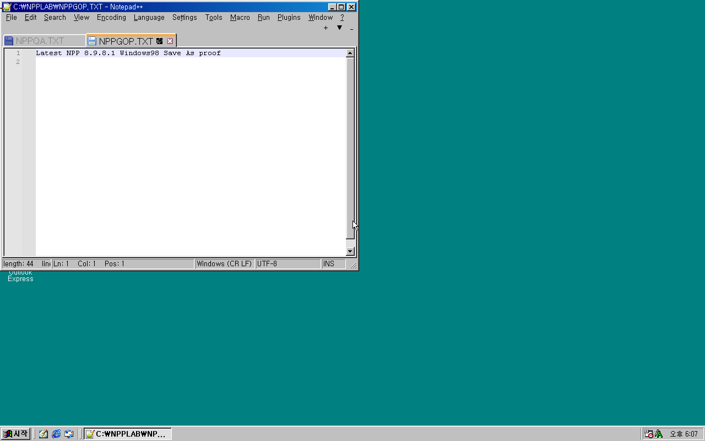

Pre-Beta 01 · 준비 중 1.0.0을 향해
Windows 98의
다음 장.
익숙한 Windows 98을 현대 하드웨어와 앱으로 이어갑니다. ShizukuDOS가 MS-DOS를 대체하는 기반을 개발하고 있습니다.
구성요소 ZIP · Windows 98 설치 미디어는 별도로 준비합니다.

기존 DOS 경로의 대조 시험입니다. ShizukuDOS 기반 Windows 98 통합 부팅은 개발 중입니다.
지금 확인할 수 있는 것
실행 기록 전체 보기Pre-Beta 01 · 준비 중
파일과 준비 상태첫 설치 미리보기를 준비합니다.
설치·부팅·드라이버 검증이 남아 있습니다. 지금 받을 수 있는 파일은 구성요소 ZIP이며, Pre-Beta 01 ISO 다운로드는 아직 제공하지 않습니다.
다음 목표
ShizukuDOS 위의 Windows 98 부팅, 현대 드라이버와 GPU 가속, Chromium·Discord·Office·Steam의 실제 기능.